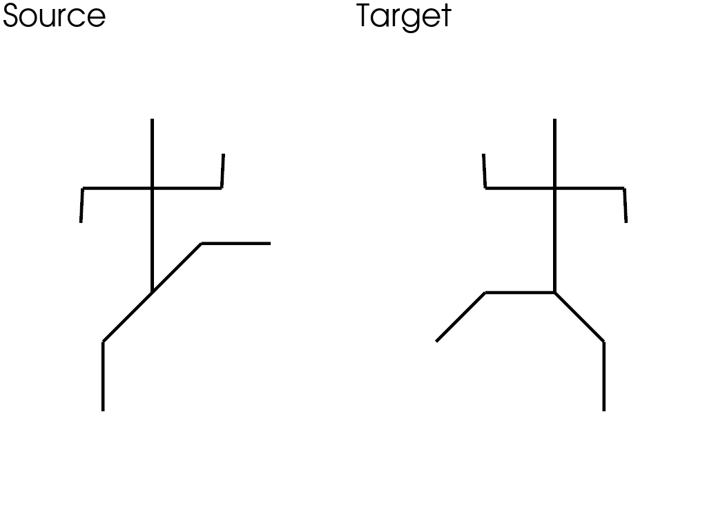

Note
Go to the end to download the full example code
The Registration class: nonrigid registration#
This notebook is an example of nonrigid registration with the registration class. We apply nonrigid registration to a pair of 2D shapes with the same topology.
Generate data#
# %%
import skshapes as sks
import pyvista as pv
import torch
cpos1 = [
(4.707106828689575, 4.79289323091507, 28.44947380182544),
(4.707106828689575, 4.79289323091507, 0.0),
(0.0, 1.0, 0.0),
]
cpos2 = [
(3.2928932309150696, 4.792893171310425, 28.44947390345415),
(3.2928932309150696, 4.792893171310425, 0.0),
(0.0, 1.0, 0.0),
]
def load_data():
import math
sqrt2 = math.sqrt(2)
edges = torch.tensor(
[
[0, 1],
[1, 2],
[2, 3],
[1, 4],
[4, 5],
[1, 6],
[6, 7],
[7, 8],
[6, 9],
[9, 10],
]
)
x1 = torch.tensor(
[
[4, 9],
[4, 7],
[2, 7],
[1.95, 6],
[6, 7],
[6.05, 8],
[4, 4],
[4 - sqrt2, 4 - sqrt2],
[4 - sqrt2, 2 - sqrt2],
[4 + sqrt2, 4 + sqrt2],
[6 + sqrt2, 4 + sqrt2],
],
dtype=torch.float32,
)
x2 = torch.tensor(
[
[4, 9],
[4, 7],
[2, 7],
[1.95, 8],
[6, 7],
[6.05, 6],
[4, 4],
[2, 4],
[2 - sqrt2, 4 - sqrt2],
[4 + sqrt2, 4 - sqrt2],
[4 + sqrt2, 2 - sqrt2],
],
dtype=torch.float32,
)
polydata1 = sks.PolyData(x1, edges=edges)
polydata2 = sks.PolyData(x2, edges=edges)
return polydata1, polydata2
source, target = load_data()
plotter = pv.Plotter(shape=(1, 2), border=False)
plotter.subplot(0, 0)
plotter.add_mesh(
source.to_pyvista(), show_edges=True, line_width=5, color="k"
)
plotter.add_text("Source")
plotter.camera_position = cpos1
plotter.subplot(0, 1)
plotter.add_mesh(
target.to_pyvista(), show_edges=True, line_width=5, color="k"
)
plotter.add_text("Target")
plotter.camera_position = cpos2
plotter.show()

Register with ExtrinsicDeformation#
source.control_points = source.bounding_grid(N=10, offset=0.05)
model = sks.ExtrinsicDeformation(
n_steps=8,
kernel=sks.GaussianKernel(sigma=1.0),
control_points=True,
)
registration = sks.Registration(
model=model,
loss=sks.L2Loss(),
optimizer=sks.LBFGS(),
n_iter=5,
verbose=True,
regularization_weight=0.1
)
registration.fit(source=source, target=target)
path = registration.path_
path_cp = model.morph(
shape=source.control_points,
parameter=registration.parameter_,
return_path = True
).path
n_frames = len(path)
plotter = pv.Plotter()
plotter.open_gif("extrinsic_deformation.gif", fps=3)
plotter.camera_position = cpos1
for i in range(n_frames):
plotter.clear_actors()
plotter.add_mesh(
path_cp[i].to_pyvista(),
show_edges=True,
line_width=2,
color="r",
)
plotter.add_mesh(
path[i].to_pyvista(), show_edges=True, line_width=5, color="k"
)
plotter.add_mesh(
target.to_pyvista(),
show_edges=True,
line_width=5,
color="b",
opacity=0.2,
)
plotter.write_frame()
plotter.show()
Initial loss : 7.33e+00
= 7.33e+00 + 0.1 * 0.00e+00 (fidelity + regularization_weight * regularization)
Loss after 1 iteration(s) : 3.26e+00
= 1.51e+00 + 0.1 * 1.75e+01 (fidelity + regularization_weight * regularization)
Loss after 2 iteration(s) : 3.19e+00
= 1.45e+00 + 0.1 * 1.74e+01 (fidelity + regularization_weight * regularization)
Loss after 3 iteration(s) : 2.99e+00
= 3.43e-01 + 0.1 * 2.64e+01 (fidelity + regularization_weight * regularization)
Loss after 4 iteration(s) : 2.88e+00
= 2.98e-02 + 0.1 * 2.85e+01 (fidelity + regularization_weight * regularization)
Loss after 5 iteration(s) : 2.84e+00
= 1.69e-02 + 0.1 * 2.83e+01 (fidelity + regularization_weight * regularization)
Register with IntrinsicDeformation#
import numpy as np
source.control_points = source.bounding_grid(N=10, offset=0.05)
model = sks.IntrinsicDeformation(
n_steps=8,
metric=sks.AsIsometricAsPossible(),
)
registration = sks.Registration(
model=model,
loss=sks.L2Loss(),
optimizer=sks.LBFGS(),
n_iter=5,
verbose=True,
regularization_weight=500
)
registration.fit(source=source, target=target)
path = registration.path_
velocities = registration.parameter_
plotter = pv.Plotter()
plotter.camera_position = cpos1
plotter.open_gif("intrinsic_deformation.gif", fps=3)
for i in range(len(path)):
plotter.clear_actors()
plotter.add_mesh(
path[i].to_pyvista(), show_edges=True, line_width=5, color="k"
)
plotter.add_mesh(
target.to_pyvista(),
show_edges=True,
line_width=5,
color="b",
opacity=0.2,
)
if i < len(path) - 1:
mesh = path[i].to_pyvista()
mesh["v"] = np.concatenate(
[
velocities[:, i, :].detach().cpu().numpy(),
np.zeros(shape=(source.n_points, 1)),
],
axis=1,
)
mesh.active_vectors_name = "v"
arrows = mesh.arrows
plotter.add_mesh(arrows, color="r", line_width=5)
plotter.write_frame()
plotter.show()
Initial loss : 7.33e+00
= 7.33e+00 + 500 * 0.00e+00 (fidelity + regularization_weight * regularization)
Loss after 1 iteration(s) : 7.04e-01
= 2.21e-01 + 500 * 9.67e-04 (fidelity + regularization_weight * regularization)
Loss after 2 iteration(s) : 4.39e-01
= 9.37e-02 + 500 * 6.91e-04 (fidelity + regularization_weight * regularization)
Loss after 3 iteration(s) : 4.09e-01
= 4.80e-02 + 500 * 7.22e-04 (fidelity + regularization_weight * regularization)
Loss after 4 iteration(s) : 4.06e-01
= 4.42e-02 + 500 * 7.24e-04 (fidelity + regularization_weight * regularization)
Loss after 5 iteration(s) : 4.05e-01
= 4.50e-02 + 500 * 7.20e-04 (fidelity + regularization_weight * regularization)
Total running time of the script: (0 minutes 9.877 seconds)